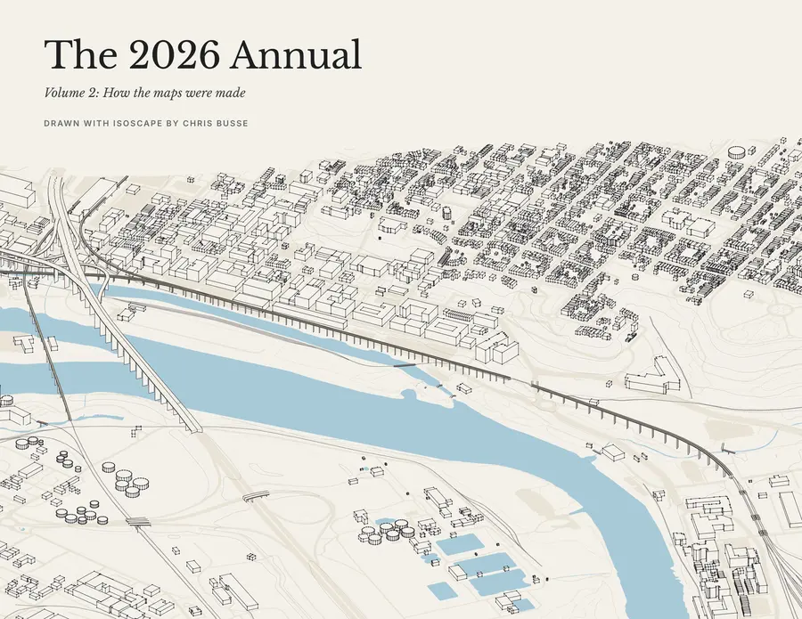

The 2026 Annual, Volume 2: How the maps were made
Every printed page of Volume 2, in book order, with its figures shown larger than in print.

Each section here is one printed page of Volume 2, in book order. The code at the foot of a page opens its section. Each numbered figure is shown larger than in print, with its caption as printed, its date and where it came from; click or tap one to see it full size. The 2026 Annual says how the two volumes and their codes work.
Pages
1 · 2 · 3 · 4 · 5 · 6 · 7 · 8 · 9 · 10 · 11 · 12 · 13 · 14 · 15 · 16 · 17 · 18 · 19 · 20 · 21 · 22 · 23 · 24
Page 1: About this volume
About this volume. This volume is the working side of Volume 1: renders that failed, debug plots, color tests, charts, the inspector’s findings and the notes Chris wrote as the work went. Most pictures here were never meant to be seen outside the work. They are kept because Chris’s standing rule is to keep the record, every round to a new file. It is candid on purpose. Bugs, dead ends and wrong turns are shown as the log records them, including the planning session’s own mistakes. Figures are numbered through the book. Most captions say what the picture is, when it was made, and where it is kept.

Fig. 1. One plate, round by round. Shockoe Bottom in the 1972 flood, left to right and down: d1, November 23 (step 26); d1r2 in the blue-gray, November 24 (step 30); the period city from evidence, November 24 (step 47); working draft d3 as a sheet, November 24 (step 53); final draft rc1, November 25 (step 64); rc3, the same day (step 83). Figs. 41, 54 and 63 show three of them larger.
Dated: November 23, 2026 · From: casestudy steps 26 to 83; casestudy steps 26, 30, 47, 53, 64, 83 (2026-11-23-26-plates-d1/05-plate-1972-flood-1972.png; 2026-11-24-30-plates-d1r2/1972-flood-1972.png; 2026-11-24-47-plates-round-two/richmond-floods-shockoe-1972-flood-1972-full.jpg; 2026-11-24-53-d3-round-one/shockoe-sheet.jpg; 2026-11-25-64-sheets-rc1-round-one/richmond-floods-shockoe-1972-300dpi-after-gaston-and-canal-fix-2000px.jpg; 2026-11-25-83-sheets-rc3/richmond-floods-shockoe-1972-1.0.0-rc3-2000px.jpg)
More on the explorer: How it's made
Page 2: The pipeline
← Page 1 · Page 3 → · All pages

Fig. 2. The numbers, drawn. The 5 m ground, the shade bands and the rapid strokes at the west end of the James view.
From: out/check/crops; out/check/crops/richmond-i195-rocketts/fall-line-hills-new.png

Fig. 3. Where the geometry comes from. Each source and what it gives, marked as measured, inferred or guessed; from the explorer’s questions page.
File dated: November 17, 2026 · From: pages/faq-sources.svg

Fig. 4. The build steps. Fetch fills the cache; eight steps turn it into the archived SVG. Each box names its module.
File dated: November 17, 2026 · From: pages/pipeline.svg
More on the explorer: How it's made · Measured, inferred, guessed · Questions and answers
Page 3: The pipeline
← Page 2 · Page 4 → · All pages

Fig. 5. Who does what. The division of the work, from the explorer’s questions page.
File dated: November 17, 2026 · From: pages/faq-who-does-what.svg

Fig. 6. A guessed height. Sacred Heart Catholic Church, Perry Street, in the I-195 to Rocketts view. OpenStreetMap records its name, its address and that it is a place of worship, but tags it only as a building, with no height and no floors. So the church rule (16 m) does not apply, and its footprint of about 370 m² gets the plain guess: 8 m. Its real height is not in OpenStreetMap.
From: out/richmond-i195-rocketts.svg; data/richmond-i195-rocketts/osm.json; src/classify.ts
More on the explorer: How it's made · Measured, inferred, guessed · Questions and answers
Page 4: Water and ground
← Page 3 · Page 5 → · All pages

Fig. 7. November 23, about 18:30. The rough test at a placeholder level: water round the wall.
Dated: November 23, 2026 · From: casestudy step 12; drafts/richmond-floods/casestudy/2026-11-23-12-wall-leaks/agnes-wall-r1-wall-leaks.png

Fig. 8. Leak 1, debug plot. Flooded orange, river blue, wall lines red: the walls end in low ground.
Dated: November 23, 2026 · From: casestudy step 12; drafts/richmond-floods/casestudy/2026-11-23-12-wall-leaks/mask-wall.png

Fig. 9. Leak 2 closed. Only the largest body of water is a source now, so the pond behind the Manchester wall no longer counts; Manchester holds.
From: casestudy step 12; casestudy step 12, mask-wall3.png

Fig. 10. Leak 4 closed. Wall ends within 5 m joined; Shockoe and Manchester dry.
Dated: November 23, 2026 · From: casestudy step 12; drafts/richmond-floods/casestudy/2026-11-23-12-wall-leaks/mask-wall5.png
More on the explorer: Terrain · Floods
Page 5: Water and ground
← Page 4 · Page 6 → · All pages

Fig. 11. Bug: pale lines at every strip, 3x. Stacked depth bands showed through each other.
Dated: November 23, 2026 · From: casestudy step 10; drafts/richmond-floods/casestudy/2026-11-23-10-spike-first-fill/bug-pale-lines-every-strip-x3.png

Fig. 12. The fix, 3x. Bands cut so they never overlap: one coverage per pixel per strip.
Dated: November 23, 2026 · From: casestudy step 11; drafts/richmond-floods/casestudy/2026-11-23-11-strip-seams/fixed-exclusive-layers-x3.png

Fig. 13. At 2.5x relief. 136 buildings read as under water; the bridges vanish. Set aside.
Dated: November 23, 2026 · From: casestudy step 13; drafts/richmond-floods/casestudy/2026-11-23-13-exaggeration/agnes-x2.5-136-submerged-bridges-hidden.png

Fig. 14. At true height. 6 buildings topped; the city stands in the water. Kept for the floods.
Dated: November 23, 2026 · From: casestudy step 13; drafts/richmond-floods/casestudy/2026-11-23-13-exaggeration/agnes-x1.0-6-submerged.png
Fig. 15. The spike’s tests, counted. Levels are the brief’s placeholders, not researched values; terrain at true height (1x); area off the river’s channel. Builds took 5 to 7 s for the SVG, about 17 s with a 3,400 px PNG.
From: casestudy step 14, log.md.
| Test (placeholder level) | Flooded | In water | Topped | Depth max / median, m | Decks awash |
|---|---|---|---|---|---|
| Agnes 10.8 m, no wall | 180.2 ha | 319 | 6 | 9.76 / 3.50 | 155 |
| Agnes 10.8 m, wall (top 12.5 m) | 84.2 ha | 32 | 3 | 9.76 / 3.74 | 106 |
| Agnes sloped, 11.6 to 10.6 m | 184.2 ha | 327 | 8 | 10.13 / 3.64 | 159 |
| Juan 9.0 m, no wall | 149.7 ha | 245 | 5 | 7.96 / 2.41 | 97 |
| Camille 8.4 m, no wall | 133.8 ha | 218 | 3 | 7.36 / 1.94 | 36 |
| Gaston, pond at 8.9 m | 15.0 ha | 116 | 2 | 4.37 / 1.90 | 0 |
More on the explorer: Terrain · Floods
Page 6: Time from old maps
← Page 5 · Page 7 → · All pages

Fig. 16. Sheet 308 of 1952, fitted, drawn from the fit’s data. Second Street from Clay to Jackson, drawn in code; no part of the sheet is shown. Dots: the seven corners read on the sheet, at today’s crossings; arrows: where the fit puts each, eight times the miss. Red: the 372 traced outlines; gray: today’s streets. The misses average 1.9 m; the largest is 3.9 m.
File dated: November 18, 2026 · From: tools/sanborn/jw/geo1952.json (the fit), tools/stories/jackson-ward/residuals.csv, history/sanborn/jackson-ward-1952.geojson (sheet 308), data/richmond-streetcars/osm.json; drawn by src/charts7.py

Fig. 17. The fit, sheet 33 of 1924. Red cross: a corner read on the sheet. Blue ring: today’s corner after the fit, with the miss in meters.
File dated: November 25, 2026 · From: pages/old-maps-fit; pages/old-maps-fit-large.webp

Fig. 18. The trace. Outlines traced in code, in red over the 1924 sheet.
File dated: November 25, 2026 · From: pages/old-maps-trace; pages/old-maps-trace-large.webp

Fig. 19. Every sheet’s misses. How far each corner misses after the fit, on all 15 Jackson Ward sheets of 1952, with each mean.
File dated: November 18, 2026 · From: tools/stories/jackson-ward/residuals.csv
More on the explorer: Time · Tutorial: a neighborhood's history from old maps · Jackson Ward before I-95
Page 7: Time from old maps
← Page 6 · Page 8 → · All pages

Fig. 20. Profiles with the error band. St. Peter, North 1st and North 5th Streets and the trench’s center line, with the 1934 survey’s check points.
File dated: November 22, 2026 · From: pages/jackson-ward-profiles; pages/jackson-ward-profiles.webp

Fig. 21. The ground today. Jackson Ward lit from the northwest, with the I-95 trench.
File dated: November 22, 2026 · From: pages/jackson-ward-hillshade; pages/jackson-ward-hillshade-today.webp

Fig. 22. The ground rebuilt, an estimate. The same frame with the trench filled.
File dated: November 22, 2026 · From: pages/jackson-ward-hillshade; pages/jackson-ward-hillshade-rebuilt.webp

Fig. 23. Where the estimate works. Filled (red, deeper toward dark red); ramp banks taken down (blue).
File dated: November 22, 2026 · From: pages/jackson-ward-cut-fill; pages/jackson-ward-cut-fill.webp
More on the explorer: Time · Tutorial: a neighborhood's history from old maps · Jackson Ward before I-95
Page 8: Buildings cut open
← Page 7 · Page 9 → · All pages

Fig. 24. Plain massing. The 1943 set (BSS·07) draws the station as blocks in its setting.
From: store print file broad-street-1943/broad-street-1943-07-main-street-station-v3.1_24x18.jpg

Fig. 25. November 16, round 3. Modeled, tower too short, dormers as boxes.
Dated: November 16, 2026 · From: cutaway outputs main-street/crop-1-tower-roof-dormers.jpg

Fig. 26. November 18, round 4. Tower raised to the HABS photographs: finial about 148 ft.
Dated: November 18, 2026 · From: cutaway outputs main-street/round4/crop-1-tower-and-roof.jpg

Fig. 27. November 18, round 5. Dormers rebuilt as dormers, after Chris called them very messy.
Dated: November 18, 2026 · From: cutaway outputs main-street/round5/crop-1-tower-roof-and-dormers.jpg

Fig. 28. The flat section, round 3 and round 4. The head house, both drawn to the same width. On November 16 the finial stood at 41.9 m above sea level (the 110 ft of 1900); on November 18, measured on the HABS photographs, at 51.6 m.
Dated: November 16, 2026 · From: cutaway outputs main-street, section.png; round4; cutaway outputs main-street/section.png (round 3) and round4/crop-5-section-head-house.jpg
Fig. 29. Tower heights. Meters above sea level; Main Street is 6.1 m. Round 4’s finial is about 148 ft over Main Street. All approximate, to within about 1.5 m (the finial about 8 ft).
From: cutaway outputs main-street/round4/round4.md.
| Level | Round 3 | Round 4 |
|---|---|---|
| Ridge | 37.9 | 41.4 |
| Tower shaft top | 32.4 | 35.9 |
| Clock centers | 34.3 | 40.3 |
| Clock stage top | 36.7 | 43.5 |
| Dome | 36.7–40.3 | 44.8–48.7 |
| Finial tip | 41.9 | 51.6 |

Fig. 30. Released, November 18. The cut through the waiting rooms, from Main Street up to the trains.
Dated: November 18, 2026 · From: out/cutaways/build (scene); out/cutaways/build/main-street-station-cutaway-1952.svg
More on the explorer: Cutaways · Main Street Station: the cutaway · The New Pump-House: the cutaway
Page 9: Buildings cut open
← Page 8 · Page 10 → · All pages

Fig. 31. Rough, the first camera. Bearing 55°: kept, but weaker.
From: pump-house/rough; cutaway outputs pump-house/rough/cutaway-long-from-west-southwest-first-camera.png

Fig. 32. Rough, the proof. The long cut and the section across a wheel, 10 callouts.
From: pump-house/rough; cutaway outputs pump-house/rough/proof-with-callouts.png

Fig. 33. Rough, the flat section. The water’s way as a red dashed line.
From: pump-house/rough; cutaway outputs pump-house/rough/section-across-wheel.png

Fig. 34. Final draft rc1, November 18. The sheet that went to inspection.
Dated: November 18, 2026 · From: pump-house/rc1; cutaway outputs pump-house/rc1/sheet.png

Fig. 35. Released. BPPH·01, as printed in Volume 1.
From: out/cutaways/print; out/cutaways/print/pump-house-cutaway_32x24.jpg
More on the explorer: Cutaways · Main Street Station: the cutaway · The New Pump-House: the cutaway
Page 10: A case study: the floods
← Page 9 · Page 11 → · All pages
Fig. 36. Agnes, three ways. Feet above sea level, NAVD88.
From: casestudy step 04, second-read.md.
| 35.47 ft | City Locks crest, 36.5 ft at 4 p.m. on June 23, 1972 (NOAA survey; USGS PP 924), converted to NAVD88 |
|---|---|
| 35.46 ft | The same crest with FEMA’s datum shift (FIS 2025, Table 19) |
| 35.5 ft | The high-water sign at Dock and Pear streets, 17 ft above the ground |

Fig. 37. A FEMA flood profile. Shockoe, from the 2025 Flood Insurance Study (federal).
Dated: November 23, 2026 · From: casestudy step 04; drafts/richmond-floods/casestudy/2026-11-23-04-fema-profiles-and-second-read/evidence/fis2025_p126_panel37P_shockoe.png

Fig. 38. The spill test, section A. 15th Street from Dock Street to the floodwall, on 2 m lidar, with the spill level dashed.
Dated: November 23, 2026 · From: casestudy step 15; drafts/richmond-floods/casestudy/2026-11-23-15-spill-path/section-A.png

Fig. 39. The spill routes, plan. Where water rising in the Bottom would spill out.
Dated: November 23, 2026 · From: casestudy step 15; drafts/richmond-floods/casestudy/2026-11-23-15-spill-path/plan-spill-routes.png
More on the explorer: Richmond's floods, 1771 to 2020 · Floods
Page 11: A case study: the floods
← Page 10 · Page 12 → · All pages

Fig. 40. The first looks, 19:08. Muddy bands, silt, ripple and murk: all brown.
Dated: November 23, 2026 · From: casestudy step 16; drafts/richmond-floods/casestudy/2026-11-23-16-flood-color/compare-full.png

Fig. 41. d1, 1972, that evening. The paler silt Chris turned down the next morning.
Dated: November 23, 2026 · From: casestudy step 26; drafts/richmond-floods/casestudy/2026-11-23-26-plates-d1/05-plate-1972-flood-1972.png

Fig. 42. Effort by step. Each step in wall-clock minutes; about 15 h 45 min, the sum of the 16 charted steps, over four days.
File dated: November 26, 2026 · From: drafts/richmond-floods/effort.md
Fig. 43. d1’s plates, counted. Level: feet NAVD88 at the Locks. Acres off the river’s channel. Buildings of those the view shows; depth at buildings, median / max. Without the wall, Fran would flood 205.6 acres (43 buildings) and Agnes on today’s city 322.5 (216).
File dated: November 26, 2026 · From: casestudy step 26; drafts/richmond-floods/counts.json.
| Plate | Level, ft | Acres | Shown | In water | Depth, ft |
|---|---|---|---|---|---|
| 1771 (town of 1788) | 38.0 ±3 | 346.9 | 7 | 1 | 3.7 / 3.7 |
| 1936 | 26.5 ±0.4 | 258.0 | 1,051 | 49 | 5.5 / 24.2 |
| Camille 1969 | 27.6 ±0.2 | 276.0 | 1,114 | 60 | 6.0 / 27.5 |
| Agnes 1972 | 35.5 ±0.3 | 335.6 | 1,119 | 89 | 11.0 / 33.3 |
| 1985 | 29.7 ±0.4 | 299.5 | 1,154 | 74 | 7.1 / 27.5 |
| Fran 1996, wall | 22.7 (+1.0) | 143.6 | 1,180 | 1 | 20.5 / 20.5 |
| 2020, wall | 17.0 ±0.1 | 72.9 | 1,289 | 1 | 13.5 / 13.5 |
| Agnes vs today’s wall | 35.5 ±0.3 | 194.7 | 1,877 | 31 | 13.4 / 33.3 |
| Gaston A, 2004 | about 28 ±3 | 34.8 | 1,197 | 62 | 6.1 / 13.1 |
More on the explorer: Richmond's floods, 1771 to 2020 · Floods
Page 12: A case study: the floods
← Page 11 · Page 13 → · All pages

Fig. 44. Six candidate colors, measured. How much darker the water’s edge is than the land; d1’s pale silt was 0.7 L* lighter.
From: casestudy step 28, lstar.json

Fig. 45. The same six, drawn. Each labeled with its measured differences; blue-gray is in the middle row at right.
Dated: November 24, 2026 · From: casestudy step 28; drafts/richmond-floods/casestudy/2026-11-24-28-contrast-candidates/compare-full.png

Fig. 46. The pick, blue-gray. The streets laid on the water at half strength, so the grid reads under it; right, Gaston B in the same look.
From: casestudy step 29; casestudy step 29, pick-1972-and-gaston-b-crop.png

Fig. 47. The decision sheet, 08:39, reworded. Its three panels side by side: A, the 1972 flood on the city the records give for 1972; B, the same height on today’s city, wall left out; C, the 1936 flood on the 1936 city, a traced year. B first said “the same river”; after Chris’s 08:44 question it reads “Water at that same 1972 height”.
From: casestudy step 27; casestudy step 27, 41-decision-period-city-vs-today-r2.png
More on the explorer: Richmond's floods, 1771 to 2020 · Floods
Page 13: A case study: the floods
← Page 12 · Page 14 → · All pages

Fig. 48. Water on the walls, at 4x. Opaque with gauges; see-through 70%; a tide mark.
Dated: November 24, 2026 · From: casestudy step 31; drafts/richmond-floods/casestudy/2026-11-24-31-water-on-the-walls-tries/tries-close-x4.png

Fig. 49. See-through at 85%, mid view. The blue holds, but the 10 m paint bands still show.
Dated: November 24, 2026 · From: casestudy step 31; drafts/richmond-floods/casestudy/2026-11-24-31-water-on-the-walls-tries/aquarium-85-mid-view-strip-seams.png

Fig. 50. The dry pair, kept. Agnes 1972 with opaque water and staff gauges, beside the same frame dry, pixel-aligned for a compare divider.
From: casestudy step 32; casestudy step 32, pair-mid-view.png

Fig. 51. X-ray walls. Three x-ray variants beside opaque and see-through: the submerged part of a wall drawn over the water.
Dated: November 24, 2026 · From: casestudy step 33; drafts/richmond-floods/casestudy/2026-11-24-33-xray-walls-tries/compare-close.png

Fig. 52. The same tries at 600 px. Opaque, x-ray band and x-ray heavy, each 600 px across: nothing shows. At plate scale, 11 ft of water is about 6 px.
From: casestudy step 33; casestudy step 33, compare-thumb.png
More on the explorer: Richmond's floods, 1771 to 2020 · Floods
Page 14: A case study: the floods
← Page 13 · Page 15 → · All pages

Fig. 53. Before: 1972 at d1r2. Traced buildings cut off in 1960; the Bottom drawn half empty. 1,119 buildings drawn, 89 of them in the water.
Dated: November 24, 2026 · From: casestudy step 30; drafts/richmond-floods/casestudy/2026-11-24-30-plates-d1r2/1972-flood-1972.png

Fig. 54. After: 1972 with evidence. 918 confirmed and 319 unconfirmed; 144 standing in the water, from 87.
Dated: November 24, 2026 · From: casestudy step 47; drafts/richmond-floods/casestudy/2026-11-24-47-plates-round-two/richmond-floods-shockoe-1972-flood-1972-full.jpg

Fig. 55. Every Shockoe plate, before and after. Buildings drawn before the evidence (gray) and after it (blue); of those after, 11 (2020) to 320 (1969) are unconfirmed. 2004 is Gaston A.
From: casestudy step 47, log.md (Plates, round two)
More on the explorer: Richmond's floods, 1771 to 2020 · Floods
Page 15: A case study: the floods
← Page 14 · Page 16 → · All pages

Fig. 56. Registration, 1974. Today’s streets (magenta) over the 1974 USGS orthophoto of Shockoe Bottom: public domain, about 1 m a pixel; circles mark the control windows.
Dated: November 24, 2026 · From: casestudy step 40; drafts/richmond-floods/casestudy/2026-11-24-40-evidence-images-and-registration/registration-shockoe-1974.jpg

Fig. 57. The unconfirmed look. Four strengths of gray tried on 1972.
Dated: November 24, 2026 · From: casestudy step 46; drafts/richmond-floods/casestudy/2026-11-24-46-unconfirmed-style-tries/four-strengths-1972.jpg
More on the explorer: Richmond's floods, 1771 to 2020 · Floods
Page 16: A case study: the floods
← Page 15 · Page 17 → · All pages

Fig. 58. Box 4 at 8x, before. The garage painted over the nearer arm of its tower, annotated.
Dated: November 25, 2026 · From: casestudy step 55; drafts/richmond-floods/casestudy/2026-11-25-57-strict-occlusion-after/box4-8x-before-annotated.jpg

Fig. 59. After strict occlusion. Convex pieces and the painted-over check.
Dated: November 25, 2026 · From: casestudy step 57; drafts/richmond-floods/casestudy/2026-11-25-57-strict-occlusion-after/box4-8x-after.jpg

Fig. 60. A1, the plant. Manchester’s treatment plant drawn 20 ft under water with the wall up, where the text says its protection is unknown.
Dated: November 25, 2026 · From: rc1 inspection crop; drafts/richmond-floods/casestudy/2026-11-25-06-independent-inspection-rc1/crops/06-manchester-withwall-plant-20ft.jpg

Fig. 61. A2, the Mayo Bridge. The deck drawn dry over a flood recorded as covering it.
Dated: November 25, 2026 · From: rc1 inspection crop; drafts/richmond-floods/casestudy/2026-11-25-06-independent-inspection-rc1/crops/05-mayo-bridge-dry-deck-1972.jpg

Fig. 62. A4, Gaston’s pins. “13 ft up the wall” beside water drawn 2 to 4 ft deep.
Dated: November 25, 2026 · From: rc1 inspection crop; drafts/richmond-floods/casestudy/2026-11-25-06-independent-inspection-rc1/crops/09-gaston-pins-depths.jpg
More on the explorer: Richmond's floods, 1771 to 2020 · Floods
Page 17: A case study: the floods
← Page 16 · Page 18 → · All pages

Fig. 63. The sheet, final draft rc3. Shockoe Bottom on June 23, 1972, the Agnes flood. The ten sheets stay at final draft and are not for sale; whether any will be sold is not decided. Their drawings are published in the story.
Dated: June 23, 1972 · From: casestudy step 83; drafts/richmond-floods/casestudy/2026-11-25-83-sheets-rc3/richmond-floods-shockoe-1972-1.0.0-rc3-2000px.jpg
More on the explorer: Richmond's floods, 1771 to 2020 · Floods
Page 18: Weather
← Page 17 · Page 19 → · All pages

Fig. 64. Radar against gauges, round 7, kept. Each gauge’s total against the radar there: standard relation, tropical relation, then corrected. Its subtitle gives the fair test, each gauge predicted without itself: typical miss x1.49 uncorrected, x1.53 with one factor, x1.44 with the local correction (Fig. 66).
Dated: November 23, 2026 · From: casestudy step 33; drafts/richmond-floods/casestudy/2026-11-23-33-radar-against-gauges/radar-vs-gauges-r7.png

Fig. 65. Every estimate of the watershed’s rain. Open circles: radar before correction; red: the rejected single factor; blue: the local correction, by its scale; gray-blue: two gauge-based federal analyses. The fair test, where each gauge is predicted without itself, is in Fig. 66.
File dated: November 26, 2026 · From: tools/floods/rain/data/rain.json
More on the explorer: Gaston's rain on Shockoe Bottom
Page 19: Weather
← Page 18 · Page 20 → · All pages

Fig. 66. Why the single factor was rejected. It did worse than no correction.
File dated: November 26, 2026 · From: tools/floods/rain/data/rain.json (leave_one_out_rms_log_error)

Fig. 67. The rain, hour by hour. Six hours without a break, 2 to 8 p.m.; whiskers show the range.
File dated: November 26, 2026 · From: tools/floods/rain/data/rain.json (basin_hourly)

Fig. 68. The watershed from two grids. Red: a fresh 3DEP grid, 31.49 km². Blue: isoscape’s 5 m cache, about 28.7 km², stopped at its east edge.
Dated: November 23, 2026 · From: casestudy step 32; drafts/richmond-floods/casestudy/2026-11-23-32-watershed/ws-03-two-dems.png

Fig. 69. The rain map, published. Storm totals, 8 a.m. August 30 to 2 a.m. August 31, with the watershed in red; drawn in code with Claude.
Dated: August 30, 2026 · From: pages/richmond-floods-rain-map.webp
More on the explorer: Gaston's rain on Shockoe Bottom
Page 20: How the work is run
← Page 19 · Page 21 → · All pages
Fig. 70. The stages and their gates. Only Chris passes a gate.
From: CLAUDE.md, Stages; README, Stages and the board

Fig. 71. The board, November 26. Every design, story, site task and research brief, one entry each, by stage.
Dated: November 26, 2026 · From: catalog/pipeline.json, updated 2026-11-26

Fig. 72. A check in code. The draw-order check counts, on every flood plate, items painted over a nearer item (see page 16).
File dated: November 26, 2026 · From: drafts/richmond-floods/casestudy/log.md, November 25 (steps 55 to 58)

Fig. 73. After strict occlusion. The 17 pairs still flagged on the Shockoe plates, 3 to 12 a plate, all small slivers: traced buildings meeting today’s, courtyard buildings, the viaduct against the train shed.
From: casestudy step 57; casestudy step 57, residual-cases-all-plates.jpg
More on the explorer: Stages and inspection · The production board
Page 21: How the work is run
← Page 20 · Page 22 → · All pages

Fig. 74. Findings by round. The floods’ ten sheets: 23, then 5, then 1. The planning session had caught two of the thirteen drawing faults.
File dated: November 26, 2026 · From: drafts/richmond-floods/casestudy/log.md, rc1 to rc3

Fig. 75. Estimate against actual. The one effort record kept in a single unit: each round took a fraction of its estimate.
File dated: November 22, 2026 · From: drafts/redlining/effort.md, Rounds
More on the explorer: Stages and inspection · The production board
Page 22: Limits and what is next
← Page 21 · Page 23 → · All pages
What the drawings cannot do, and what comes next. Heights: in downtown Richmond about 40% of building heights are guesses (Fig. 6). Buildings must sit wholly inside the frame to be drawn; bridges are cut at the plate’s edges. The hillshade is 24 nested bands each way, so at extreme zoom a band’s edge shows as a faint step. Rapids sit where the lidar’s flattened water surface put its steps; beside Belle Isle the north channel reads level. Skyways are not drawn: OpenStreetMap rarely gives their floor. A dated series shows only surviving buildings and what is curated, each with a source; traced Sanborn buildings on water, beside a viaduct or on a track are left out whole, and their heights come from their material. Ground put back under a highway is an estimate: in Jackson Ward about 2 m (95%) mid-trench, 3 to 4 m or more at its ends. Concave buildings that interlock can form an ordering cycle, broken by depth unless a region asks for strict occlusion. Outside the US, terrain is only as fine as its source, often 30 m.

Fig. 76. The edge of the plate. The Rocketts end of the James view: the slab edge where the drawing stops. The rule at the frame: a building must sit wholly inside it to be drawn.
From: out/check/crops; out/check/crops/richmond-i195-rocketts/rocketts-end-new.png

Fig. 77. The record, by day. The floods case study’s 747 PNG and JPEG files in this copy, by the day of their step folder.
File dated: November 26, 2026 · From: the floods case-study step folders, counted; drafts/richmond-floods/casestudy/IMAGES.md
More on the explorer: What the drawings cannot show · Measured, inferred, guessed
Page 23: A layout study for 2027
← Page 22 · Page 24 → · All pages
A layout study for 2027. This map work comes ahead of the 2027 photography curation. This page tries three ways to set a photograph beside a map. The grey frames stand for 3:2 photographs to come; no photograph is shown.
More on the explorer: Artist statement
Page 24: Colophon
← Page 23 · The 2026 Annual → · All pages
How this book was made. Each page has a code that opens that page in the book’s online companion at isoscape.chrisbusse.com, with its figures shown larger. In this volume the codes open isoscape.chrisbusse.com/B/2-01 to 2-24, one for each page; each figure is given with its caption and where it came from.
More on the explorer: Artist statement · About, credits and licenses
Drafted and assembled in code with Claude for Chris Busse, from the books' own files. The artist statement says how the two work together.